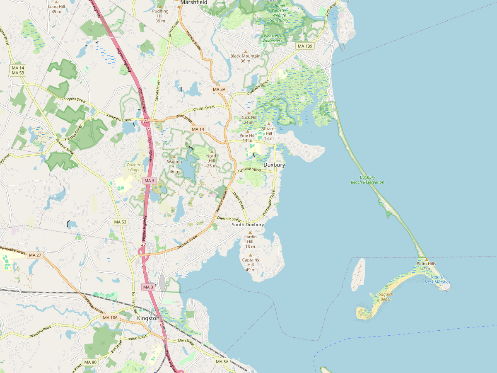

Maps

Parking & Access
- Capacity
- Minimal
- Address
- Bluefish River area, Duxbury MA
- Coordinates
- 42.046066, -70.671633 Verify on Google Maps ↗
- Category
- Town Landing
Old Mill Dam / Salt Mill area; tidal river access
Historical Records
-
1715-05-20Old landing place laid out as a common town landing; 40 ft highway to the Marshfield–Plymouth road
site match assumed
“allowing all the ground on the Southerly side of the said fence to bluefish river channel, for a common landing place for said town”
Selectmen Edward Southworth, John Simons Sen., John Partridge; recorded by John Wadsworth, Town Clerk. Copy of the Old Records of the Town of Duxbury, Mass., from 1642 to 1770, p. 107, 108 (original Vol. a, p. 99). -
1718-03-28Town meeting: Abraham Samson may gate the highway, and grants the town the landing privilege forever
site match assumed
“the benefit and privilege of the said landing place for the landing and carrying away their hay &c forever”
Town Meeting; signed Abraham Sampson. Copy of the Old Records of the Town of Duxbury, Mass., from 1642 to 1770, p. 237 (original Vol. a, p. 300). -
1899-03-061899 Report on Town Landings lists this as landing No. 6; the town adopts the landings as surveyed by Laurence Bradford and orders the surveys recorded at Plymouth
site match assumed
“At Mill pond, by Blue Fish river, by town highway adjoining land formerly belonging to Amherst A. Frazer.”
Report on Town Landings by Laurence Bradford and Hamilton Wadsworth, Jan 21, 1899, Town Report pp. 38–41; adopted at the annual town meeting March 6, 1899 (p. 41: "that the town adopt the town landings as laid out by Mr. Bradford, that they be marked by proper stones, and the surveys be recorded in Plymouth and Town Clerk's office"). The recorded survey is Registry Plan Book 2 p. 6, per the 1975 report. The report calls it "the oldest landing in the town being first defined in 1715", re-defined 1822 and 1834, and says part was sold to Samuel A. Frazer and others on Dec 30, 1840, Plymouth Deeds Book 201, Page 87 (deed not yet seen). The 1975 report ties No. 6 to St. George Street, not this site. Annual Reports of the Town of Duxbury, 1890–1899 (bound volume), scan 789, 790, 791, 876. -
1899–1900The town owns part of the wharf at Blue River Bridge; J. H. Killian offers to transfer the rest, to revert if the town ever gives up the wharf
“the present owner of the other part, Mr. J. H. Killian, generously offers to transfer his part to the town provisionally upon the wharf being put and maintained in good repair, and further providing, that should the town ever surrender its rights to the wharf, that the property revert to him or his heirs.”
Report on Town Landings (A. E. Green, Laurence Bradford, Hamilton Wadsworth), Town Report for 1899, pp. 35–36; warrant Art. 11, 1900. Whether the town accepted is not yet found. Annual Reports of the Town of Duxbury, 1890–1899 (bound volume), scan 870, 871. -
1901-03-04Committee on Town Landings authorized to settle the question of the St. George Street landing and to buy adjoining land
site match assumed
“Voted — That the committee on Town Landings be authorized to settle the question of the Town Landing on St. George street, employing counsel, if necessary, and to buy adjoining land.”
Annual town meeting March 4, 1901. The 1975 report ties St. George Street to 1899 landing No. 6 at the Mill Pond; whether it is this site is open Also quoted in the 1975 Town Landing Study Committee report. Annual Reports of the Town of Duxbury, 1901–1910 (bound volume), scan 151. -
1916-03-11Selectmen authorized to move the south line of the town land at Blue Fish River two feet north
“Voted to authorize the Selectmen to rectify the southerly line of the town land between Blue Fish River and Riverview Avenue, moving the boundary stones two feet northerly.”
Town Meeting March 11, 1916, Town Report 1916 p. 90. Report of the Duxbury Town Landing Study Committee, 1975, scan p. 14, 43.
Copy of the Old Records of the Town of Duxbury, Mass., from 1642 to 1770. Transcribed 1892 by George Etheridge; printed Plymouth: Avery & Doten, 1893. Secondary source (transcription of the original manuscript books). Full book ↗
Annual Reports of the Town of Duxbury, 1890–1899 (bound volume). Printed annual town reports: Selectmen's and Town Clerk's reports and the votes of each town meeting. Primary printed source for town votes. Scanned copy on Internet Archive. Page links go to images of single scan pages; the "scan" number is the Internet Archive page index (n), and the printed page is given in the citation. Full book ↗
Annual Reports of the Town of Duxbury, 1901–1910 (bound volume). Printed annual town reports: Selectmen's and Town Clerk's reports and the votes of each town meeting. Primary printed source for town votes. Scanned copy on Internet Archive. Page links go to images of single scan pages; the "scan" number is the Internet Archive page index (n), and the printed page is given in the citation. Full book ↗
Report of the Duxbury Town Landing Study Committee, 1975. Typescript report to the Selectmen by Donald F. Corcoran, Robert Cooper and Robert S. Ramsay, appointed under Article 65 of the 1974 annual town meeting. It includes typed transcriptions of town report excerpts from 1894 to 1972. Those transcriptions are a secondary source, so check each one against the original Town Report. The page links go to pages of the scanned copy (scan page numbers, not the report's typed page numbers).
Existing Conditions
No conditions data recorded yet.
Add field notes, photos, and observations here.Mitigation Plans
No mitigation plan recorded yet.
Add proposed improvements, timeline, and responsible parties here.